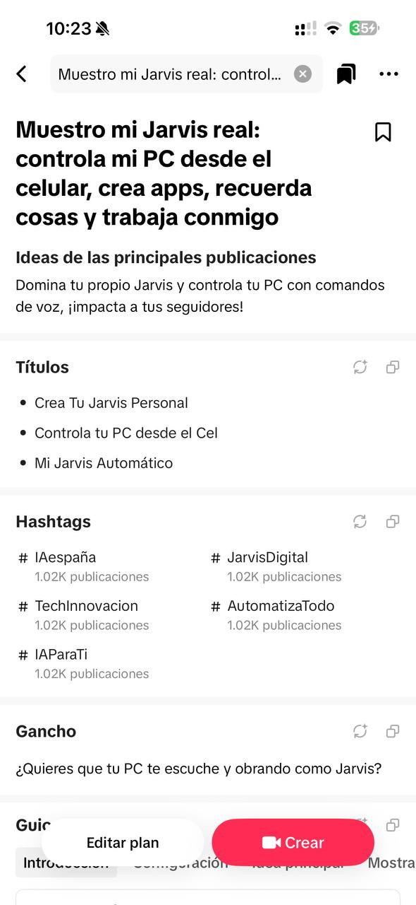
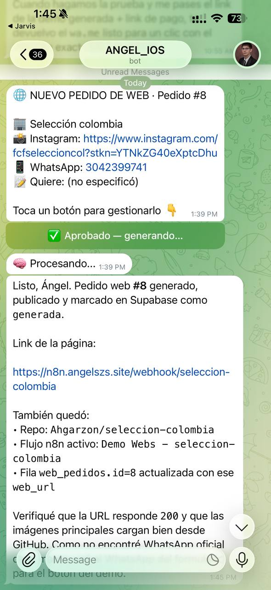

▣
Ve y entiende tu pantalla
En Modo PC recibe una captura reciente, interpreta lo que estás viendo y puede actuar con contexto.
YARBIS vive en Telegram y se conecta a tu computador para ayudarte como un operador real: ve tu pantalla, entiende lo que señalas, ejecuta tareas, crea páginas, organiza información y te recuerda lo importante.
Desde el celular puedes hablarle, mirar el escritorio y pedirle acciones sobre lo que está en pantalla.
La diferencia es que YARBIS no se queda respondiendo texto: puede trabajar sobre tus sistemas, tu pantalla, tus archivos y tus rutinas.
En Modo PC recibe una captura reciente, interpreta lo que estás viendo y puede actuar con contexto.
Abres YARBIS en el celular, ves el escritorio, tocas, escribes, haces scroll y hablas sin estar pegado al computador.
Puede mover el cursor, hacer clic, arrastrar, hacer scroll y señalar elementos con cámara local.
Le das una idea o una referencia y te ayuda a construir, publicar y ajustar páginas web, prototipos y automatizaciones.
Guarda recordatorios reales y te escribe por Telegram cuando toca actuar, no solo lo anota en una lista.
Puede correr comandos, revisar código, generar archivos, operar flujos y ayudarte a cerrar tareas completas.

La idea no es entregarte una demo técnica. La instalación deja una experiencia completa: bot, memoria, PC conectado, guía de uso y recuperación automática del agente.
El instalador prepara el entorno base y deja conectado el computador con tu operador personal. Después se personaliza según tu negocio o tu forma de trabajar.
Se instala el agente local, el módulo de pantalla/control y los accesos para iniciar YARBIS sin abrir mil cosas a mano.
Tu bot queda enlazado a tu cuenta. Desde ahí le puedes escribir, enviar fotos, pedir recordatorios o activar el Modo PC.
Se configura qué debe saber de ti, qué herramientas puede tocar y qué límites tiene para trabajar con seguridad.
Antes de entregarlo, se verifica voz, pantalla, control remoto, recordatorios y una tarea práctica de tu día a día.
YARBIS se adapta al rol: emprendedor, creador de contenido, operador técnico, dueño de negocio, estudiante o profesional independiente.
Crea páginas, responde ideas, organiza clientes, automatiza tareas repetidas y prepara mensajes comerciales.
Planea videos, guiones, títulos, hashtags, calendarios y piezas visuales para publicar más rápido.
Revisa repos, corre pruebas, documenta cambios, despliega y deja trazabilidad del trabajo.
Recordatorios, archivos, mensajes, ideas, compras, pendientes y decisiones guardadas en un cerebro ordenado.

Se vende como instalación personalizada porque cada persona necesita permisos, memoria, herramientas y límites distintos.
Requiere PC Windows encendido, sesión iniciada, Internet y permisos concedidos por el usuario. YARBIS no despierta un computador apagado ni salta permisos del sistema.
Sí. Con Modo PC activo puedes ver la pantalla, tocar, escribir, hacer scroll y hablarle. El control se concede desde tu sesión y se puede cerrar cuando quieras.
No. La pantalla se transmite mientras activas el modo correspondiente. Las capturas para entender una orden se usan para esa tarea y no son un video permanente para el modelo.
No. La experiencia principal es por chat y voz. Si eres técnico, también puede ayudarte con repos, comandos y pruebas.
No. La base es la misma, pero cada instalación se ajusta a tus herramientas, tus permisos y tu forma de trabajar.
Instala YARBIS y empieza a trabajar desde Telegram, celular y PC con una IA que entiende contexto y ejecuta contigo.
Quiero mi YARBIS